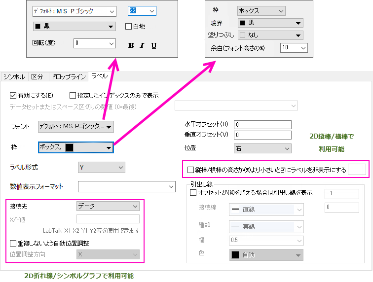

関連する動画：ワークシート列のデータに基づくラベリングデータプロット
関連する動画：ワークシート列のデータに基づくラベリングデータプロット
 関連する動画：ワークシート列のデータに基づくラベリングデータプロット
関連する動画：ワークシート列のデータに基づくラベリングデータプロット
ラベル参照元の指定は2通りあります。
ワークシートのラベル列を使ってプロットにラベルを付けた場合、以前のバージョンのように作図の詳細ダイアログにラベルデータセットは表示されません。どの方法でラベルを付けても、以下に説明しているように、Yデータセットのラベルタブを使用します。
| 直交座標系の2D折れ線/線＋シンボルグラフや2D縦棒/横棒グラフの「ラベル」タブ |
|  |
| ボックスチャートのラベルタブ(ボックスチャート タブのボックスラベルにチェックがついているとき)やヒストグラム
|
| 2Dベクトルのラベルタブ |
| 樹形図のラベルタブ |
| ヒートマップのラベルタブ |
| 円パッキンググラフのラベルタブ |
このチェックボックスにチェックを付けて、データプロットにラベルを追加します。
Origin2020b以前では、このボックスをオンにすると、プロットグループ内のすべてのプロットのラベルが有効になっていました。指定したデータのみでデータ表示を選択することで、このボックスは、グループの一部であるかどうかにかかわらず、選択したプロットのラベルのみを有効にします。しかしながら、ミニツールバーのデータラベルを表示ボタンを使用して、すべてのプロットにラベル付けをすることもできます。
グループ内のすべてのプロットに同時にデータラベルを追加するには：
|
このボックスにチェックを付けると指定した点のみラベル付けします。有効にした場合、リストボックスを使用してラベルの場所を指定します。
| シンタックス | 説明 | 例 |
|---|---|---|
| a b c d e | スペース区切りの行番号のリストでラベルを表示 | 1 4 5 9 |
| n:m:s | n からm 行の間で、s 行スキップして表示 | 2:0:5 |
| x=a b d g | X値の位置でラベルを表示 | x=3.5 7.8 10.2 14.0 |
| [BookN]sheetM!col(A) | 指定された列に含まれる行番号の位置でラベルを表示 | [Book1]Sheet2!Col(A) |
| x=[BookN]sheetM!col(A) | 指定した列にリストされているx値のラベルを表示 | x=[Book1]Sheet2!Col(A) |
この機能の1つの用途として、標準のグラフ凡例を使用する代わりに、プロットメタデータを使用して個々のプロットにラベルを付けることができます。詳細は、FAQ-1065 各折れ線グラフに凡例タイプのエントリでラベル付けするにはどうすればいいですか？を参照してください。 |
ラベルテキストのフォントを選択します。
デフォルト: フォント名 を選択すると、オプションダイアログボックス(環境設定: オプション)のテキストフォントの標準フォントドロップダウンリストで決めたフォントを使います。
ラベルのフォントサイズ(ポイント単位)を入力または選択します。
デフォルトのサイズは、オプションダイアログ（環境設定：オプション）のテキストフォントタブ上のテキストツールグループのサイズコンビネーションボックスで設定されている値によって決定されます。
ラベルの色を選択します。
作図の詳細ダイアログで、色が自動に設定されていて、その他のオプションタブ(ページレベル)のシンボルに従うラベルの自動カラーが選択されている場合、ラベルの色はシンボルの色に従います。
作図の詳細ダイアログで、色が自動に設定されていて、その他のオプションタブ(ページレベル)のシンボルに従うラベルの自動カラーのチェックが外れている場合、背景色と最もコントラストが付く色が選ばれます。
このチェックボックスにチェックを付けると各ラベルの背景が白地になります。
ラベルを回転する角度を度単位で入力または選択します。
0度は水平なテキストになります。
このチェックボックスは一点のみ編集する場合で利用可能です。
一点のみ編集する場合、特に編集しない限りは他のプロットのプロパティに従います。強調は、この点が従っているプロットの太字、斜体、下線 などの書式のことです。チェックを外すと書式ボタンを使用できます。
ラベルテキストのテキストフォーマットボタン(太字、斜体、下線)をクリックします。
複数行のデータラベルの位置合わせに使用します。一部のグラフタイプでは利用できません。
自動: 位置の設定に従います。
ほかに、位置合わせ = 左、右、中央揃えに設定することができます。
ラベルテキストの枠を追加するかどうかを指定します。このオプションはボックスチャートでは利用できません。
これらはドロップダウンリストのメニューなし, ボックス, 影から選択できます。
枠のオプションは、特別なポイントでは、デフォルトで自動に設定されています。つまり、特別なポイントの設定は、プロット全体の設定に従います。ただし、必要に応じて、これらの設定は変更できます。
枠としてボックスまたは影を選択した場合、ラベルボックスの境界色を設定できます。
枠としてボックスまたは影を選択した場合、ラベルボックスの塗りつぶし色を設定できます。
フォント高さの%で枠の余白を調整します。上/下/左/右の余白で同じ値です。このオプションはボックスチャートでは利用できません。
このオプションは、特別なポイントでは、デフォルトで自動に設定されています。つまり、特別なポイントの設定は、プロット全体の設定に従います。ただし、必要に応じて、これらの設定は変更できます。
ラベルとして使用する値またはデータセットを指定します。
| X | データのX値をラベルとして使用します。 |
|---|---|
| Y | データのY値をラベルとして使用します。 |
| 行インデックス | 行インデックス（行番号）をラベルとして使用します。 |
| (X, Y) | データのX、Y値をラベルとして使用します。 |
| カスタム | フォーマット指定で指定した内容とフォーマットを使ってラベルを作成します（次のセクションを参照）。 |
| Col(列のショートネーム) | ワークシートの指定列の内容をラベルとして使用します。 Y列データの右側にあるすべての列がここに一覧表示されます。 |
数値表示フォーマットの注意
フォーマット指定の注意：
このドロップダウンリストは、次の場合にのみ有効です。